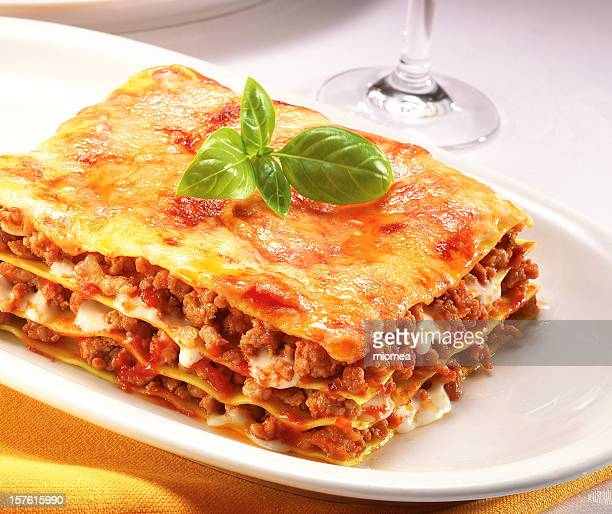

Lasagna

This recipe is for an easy way to make a delicious lasagna. Below you will find the ingredients necessary
the way how to make this delicious Lasanyer.
Ingredients:
- Tomato
- Ground Beef
- Onion
- Garlic
- Pasta
- Cheese
Steps:
- Put a pot with olive oil on the fire over medium heat
- Chop the onion, garlic and the tomatoes and put them in the pot
- Let simmer until golden brown
- Add the ground beef
- When everything is browned, put the heat to low
- Put on a pot of water and turn the oven on on 180 C
- Cook the pasta leaves 2 min
- Add layers of sauce, pasta leaves and cheese
- Finish with a topping of cheese
- Put in the oven for 45 min